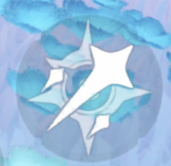
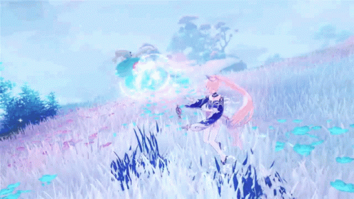
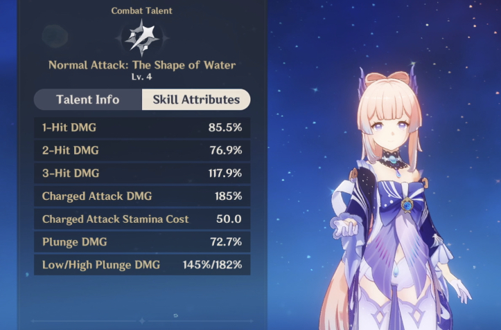
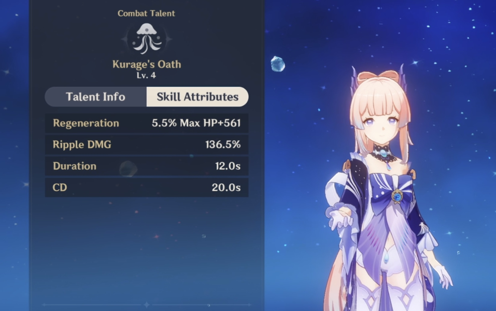
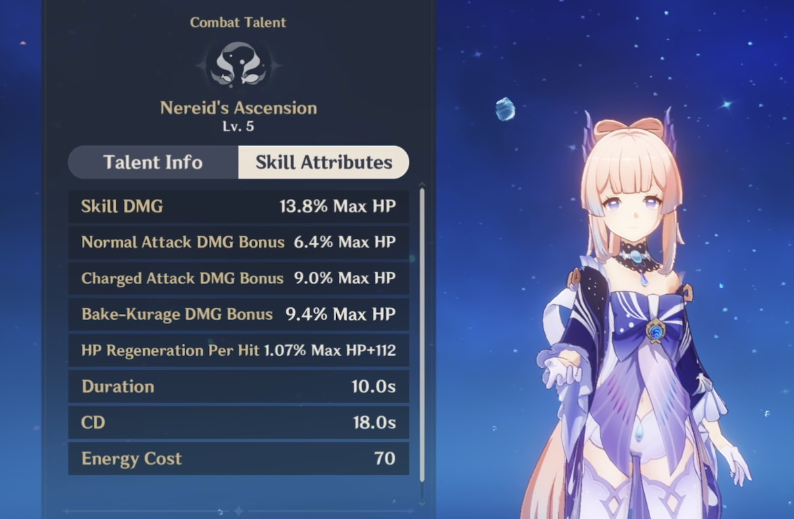
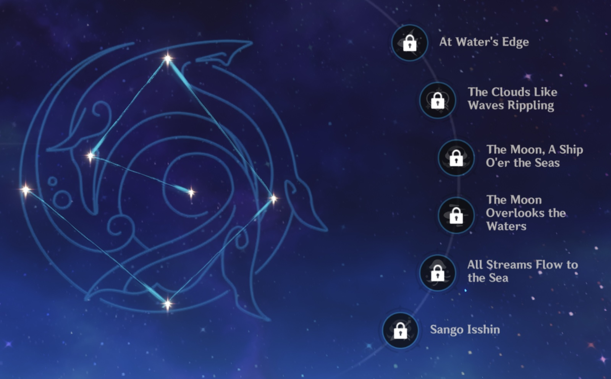

Sangonomiya Kokomi
Sangonomiya Kokomi is a Hydro  catalyst user. She is also a healer.
catalyst user. She is also a healer.
Sangonomiya Kokomi is a Hydro catalyst user. She is also a healer.

Kokomi has 3 normal attacks,a charged attack which deals AoE Hydro DMG in exchange for stamina, and a plunge attack. Her elemental skill,"Kurage's Oath", summons a "bake-kurage", this applies WET status on Kokomi as well as heals nearby active characters. Her Ultimate (ult),"Nereid's Ascension", summons the might of Watatsumi, dealing Hydro DMG to surrounding opponents, before robing Kokomi in Ceremonial Garment made from the flowing waters of Sangonomiya.

❀ As stated above, Kokomi strikes 3 normal attacks
❀ When the attack button is long-pressed, Kokomi strikes with a charged attack. This attack deal AoE Hydro DMG while consuming a certain amount of stamina.
❀ When pressing the attack button mid-air while gliding or jumping of a cliff, this is called a plunged attack. This deals Plunge DMG.
(screenshot taken from personal account)

❀ Kokomi's elemental skill,"Kurage's Oath", summons a jellyfish-like "bake-kurage".
❀ Her Ultimate (ult),"Nereid's Ascension", summons the might of Watatsumi, dealing Hydro DMG to surrounding opponents, before robing Kokomi in Ceremonial Garment made from the flowing waters of Sangonomiya.

(screenshots taken from personal account)


In Genshin Impact, when you receive the same character via wishing or from an event more than once, the character will be converted into the said received character's constellation, the 4-star item,"Masterless Stardust", and the 5-star item,"Masterless Starglitter". The said character constellations can then be used to upgrade and enhance the character's talents/skills.The maximum number of constellations per character that you can acquire is 6.
❀ C1 - At Water's Edge
❀ C2 - The Clouds Like Waves Rippling
❀ C3 - The Moon, A Ship O'er the Seas
❀ C4 - The Moon Overlooks the Waters
❀ C5 - All Streams Flow to the Sea
❀ C6 - Sango Isshin